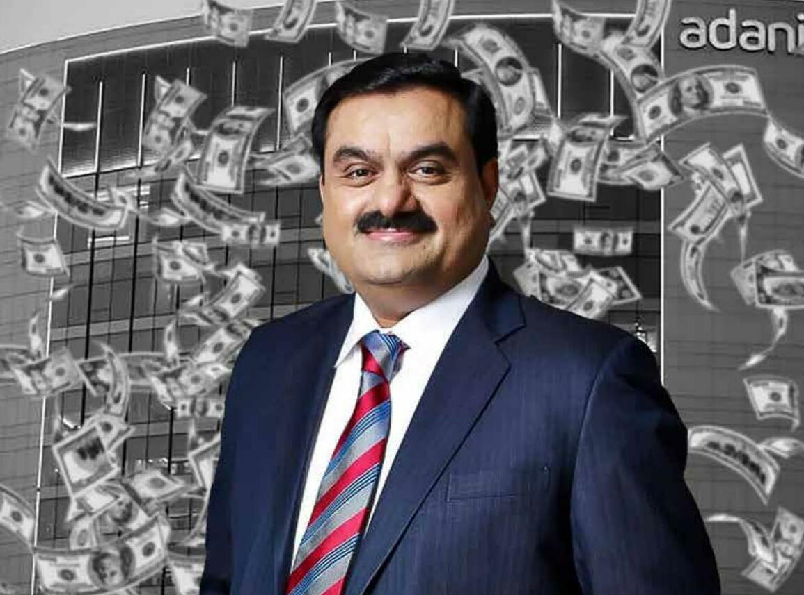

Gautam Adani
1962-Till Now
First Generation Billionaire
Gautam Adani, born in 1962 in Ahmedabad, Gujarat, is a self-made entrepreneur and the founder of the Adani Group. Coming from a modest family background, he left college to pursue business opportunities and began his career in diamond trading in Mumbai. In 1988, he founded Adani Exports (now Adani Enterprises), which later grew into the multinational Adani Group, operating in ports, energy, infrastructure, airports, and renewable power. Unlike many other billionaires who inherited wealth, Adani built his empire from scratch, earning him the title of a first-generation billionaire. His vision and determination have made him one of the most influential business leaders in India and across the world.
Popular & Inspiring Things About Gautam Adani
- First-Generation Billionaire
- Started Small, Dreamed Big
- Founder of Adani Group
- Focus on Infrastructure & Nation-Building
- Risk-Taking Ability
- Hard Work & Discipline
- Global Recognition
- Belief in Learning & Growth